Södermalm i tid och rum. Stockholm
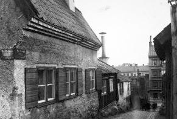
Bosatta i Tavastgatan 55 år 1908:
Telefonarbetaren Axel Lorenz Josef Lindgren (f 1864) med hustrun Olga Josefina (f 1862) och 4 barn. Anställd vid
Rikstelefon. Årshyra 200 kr. Årslön 1 390 kr
Elektriska montören Joel Edvin August Westerberg (f 1875) med hustrun Nanna Maria Eugenia (f 1875) och 2
barn. Anställd hos Luth & Roséns Elektriska AB. Årshyra 250 kr. Årslön 1 204 kr
Verkkusken Johan August Pettersson (f 1874) med hustrun Klara Matilda (f 1856). Anställd vid Ludvigsbergs
mekaniska verkstad. Årshyra 130 kr. Årslön 1 190 kr
Skomakaren Per Axel Karlsson (f 1849) med hustrun Maria Josefina (f 1853). Årshyra 230 kr
Fabriksarbeterskan Ursa Idela Josefina Karlsson (f 1883) med 1 barn Arbetaränkan Emma Johansson (f 1866) med 1 barn. Årshyra 100 kr Åkeriarbetaren Henning Leonard Jonsson (f 1875) med fästekvinnan Anna Lovisa Andersson (f 1866) och 2 barn. Årslön 1 000 kr Byggnadsarbetaren Johan August Eriksson (f 1860) med hustrun Evelina Josefina (f 1854). Årshyra 100 kr. Årslön 1 200 kr Förmannen Oskar Holm (f 1864). Anställd vid Mälarvarvet. Årshyra 100 kr. Årslön 1 380 kr Rättaränkan Christina Fredrika Holm (f 1835). Fattigunderstöd Fabriksarbetaren Gustaf Leander Carlsson (f 1865) med hustrun Emma Fredrika (f 1860) och 2 barn. Anställd vid Stockholms Hyvleri- och Snickerifabrik. Årshyra 120 kr. Årslön 1 276 kr Konditoriarbeterskan Elsa Wilhelmina Antoinetta Carlsson (f 1888). Anställd hos Percy F Luck
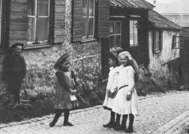
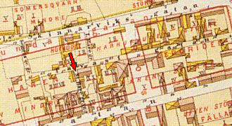
Stora Hargränd söderut från Tavastgatan. Huset närmast till vänster är Tavastgatan 55.
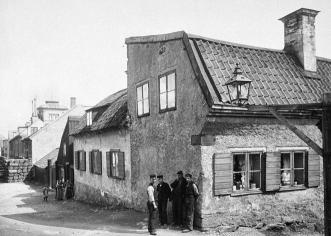
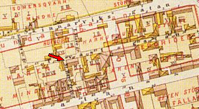
Hörnhuset nr 55 Tavastgatan/Stora Hargränd från väster.
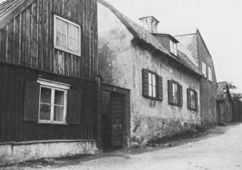
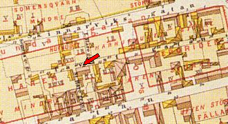
Samma hus från öster
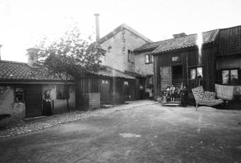

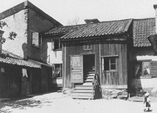
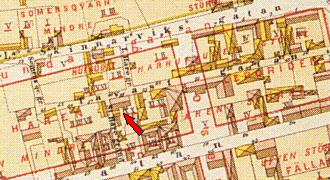
 Gårdsinteriörer från Tavastgatan 55.
Gårdsinteriörer från Tavastgatan 55.
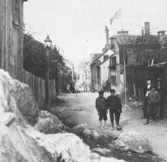
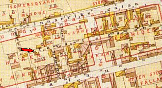
 Tavastgatan österut från Somens kvarngränd.
Tavastgatan österut från Somens kvarngränd.
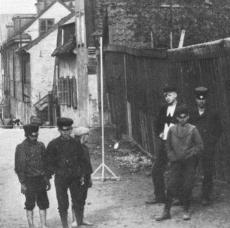
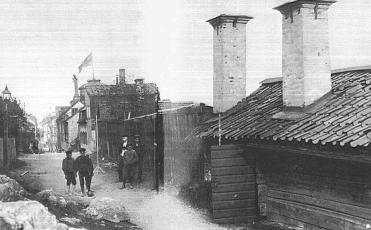

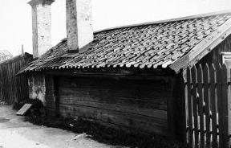
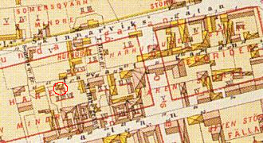
Ryggåsstuga på Tavastgatan vid Somens Kvarangränd